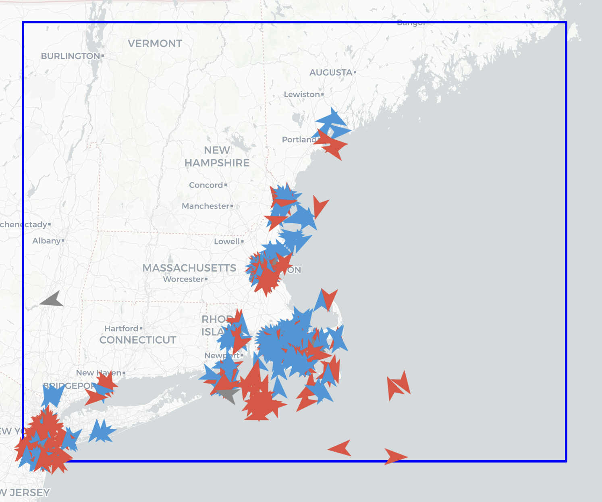
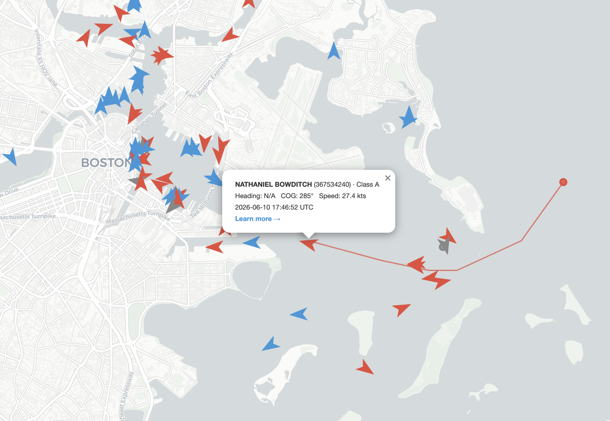
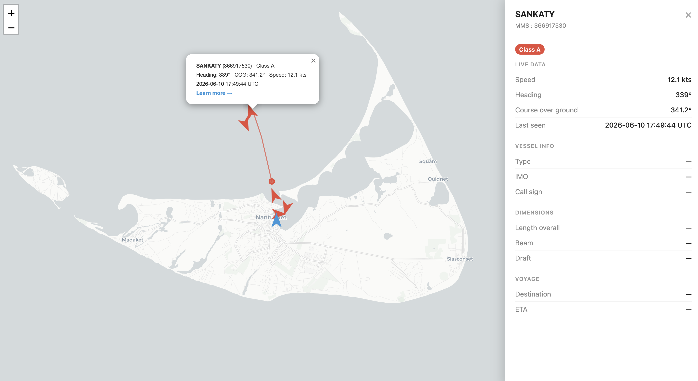
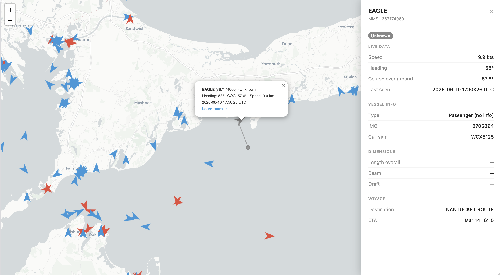

AIS Maritime Tracker is a real-time vessel monitoring system that continuously ingests live telemetry
from ships broadcasting over the Automatic Identification System (AIS) — the international maritime
standard for vessel tracking. The system streams data from AISStream.io via WebSocket, parses incoming
messages, and renders an interactive map updated every five seconds showing all active vessels within
a configurable geographic region.
The project started as a way to build something genuinely useful with streaming data: not a batch job,
not a static dataset, but a live pipeline that has to keep up with real-world ships moving in real time.
The New England coastline — Boston Harbor, Cape Cod, Nantucket Sound — made for a rich and busy test environment.
The system connects to the AISStream WebSocket API and subscribes to a geographic bounding box defined in
a config file. Within that box, it filters for five AIS message types: position reports from Class A and
Class B transponders, long-range broadcasts, and static vessel data messages. Each incoming message is
parsed, classified, and merged into a per-vessel state dictionary maintained in memory.
Position messages update a vessel's track history — capped at 200 points — and refresh live data such as
speed, heading, and course over ground. Static data messages, broadcast roughly every six minutes by
Class A vessels, carry vessel name, ship type, dimensions, and voyage details (destination and ETA),
all of which are parsed and merged into the vessel record.
Every five seconds the system regenerates an interactive map. Each vessel is
rendered as an SVG boat marker rotated to its actual heading (or course over ground as fallback),
color-coded by AIS class. Track history is drawn as a hidden polyline that toggles visible when the
marker is clicked. Clicking any vessel also opens a summary popup; clicking "Learn more" slides in a
full side panel with all live and static data. Clicking the map background resets everything.
The application is containerized with Docker for consistent, portable deployment, and reconnects
automatically with exponential backoff if the WebSocket connection drops.

Full New England coast view. Red = Class A (commercial), Blue = Class B (recreational). Blue box is the active monitoring region.

Boston Harbor. Clicking a vessel reveals a live data popup. The red polyline shows the NATHANIEL BOWDITCH's recent track history.

"Learn more" slides in a detailed side panel. Here the SANKATY ferry off Nantucket, showing live speed, heading, and vessel dimensions.

Cape Cod. The EAGLE passenger vessel, showing voyage data pulled from static AIS messages: destination NANTUCKET ROUTE and ETA.